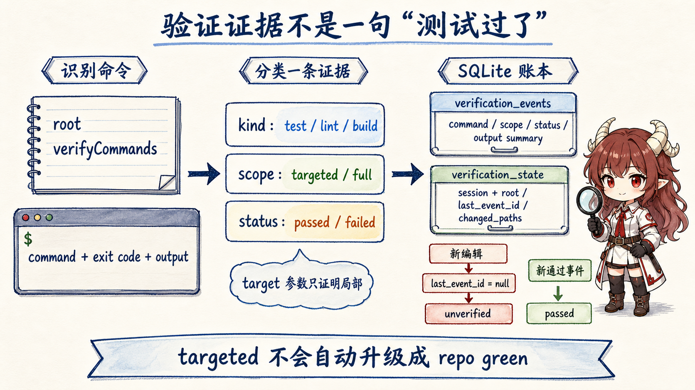
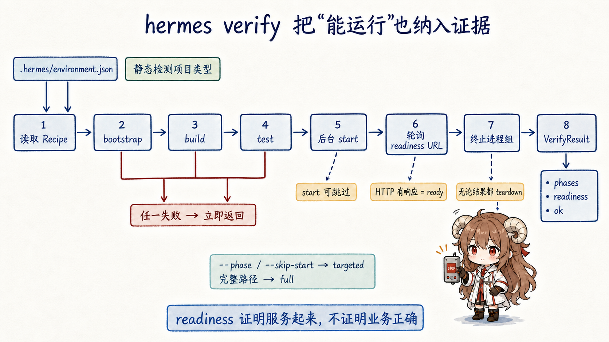
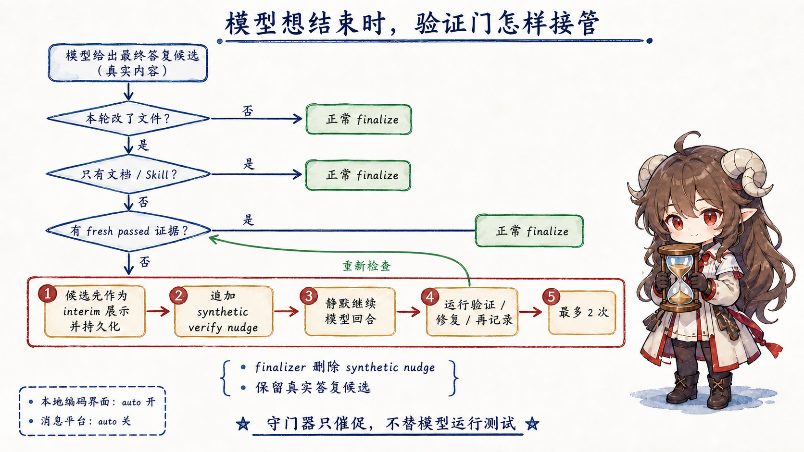

一、“我跑过测试”为什么还不能等于“可以交付”
前两篇一直追踪同一个例子：generated-code-testing Skill 原本只提醒 Agent 修改 schema 后重新生成代码，
离线候选又补上了“检查生成文件差异”这一步。现在人决定采用新版 Skill。下一次真实任务里，这份 Skill 指导 Agent 修改的是目标业务仓库中的生成代码检查逻辑，
不是 Hermes 核心；后文的项目根目录、测试和证据也都属于这个目标仓库。到这里，最容易出现的一句话是：“改好了，测试也通过了。”
问题在于，这句话省略了决定可信度的全部上下文。它跑的是一条目标测试，还是整个仓库的测试？测试发生在最后一次编辑之前还是之后？ 它只验证了 Python 函数，还是也证明服务能启动？命令是否属于这个项目认可的验证入口？如果这些问题没有答案，“测试过了”只是一段叙述，无法支撑交付声明。
可以先把验证证据理解成一张带时间和范围的检验票据。它至少要写清楚：在哪个工作区执行了哪条命令，检查范围是什么， 退出状态和输出摘要是什么，以及它是否发生在最新修改之后。交付不是再多说一句自信的话，而是让下面这条顺序成立：
修改代码
-> 旧证据失效
-> 找到项目认可的验证入口
-> 执行并记录范围与结果
-> 最新修改之后出现 fresh pass
-> 才允许声称“已验证”这一篇带着四个问题读源码。 Hermes 怎样知道该跑什么？怎样区分“测了一个文件”和“整个仓库通过”？模型准备结束却没有新证据时会发生什么？ 本地通过、离线评测通过和人工同意交付，为什么仍是三个不同的决定？
二、先别急着执行：Hermes 怎样知道这个项目该跑什么
假设 Agent 刚修改了生成代码检查逻辑。最简单的做法是让模型凭经验猜命令：Python 项目就试 pytest，Node 项目就试
npm test。这种猜法在小仓库里偶尔有效，在真实项目里却会漏掉包装脚本、特定工作目录、类型检查或构建步骤。
因此 Hermes 先做的不是运行命令，而是建立一份稳定的项目事实。
2.1 项目事实是一张运行说明，不是新的配置中心
detect_project_facts() 查看仓库里已经存在的线索：manifest、包管理器、scripts/run_tests.sh、
package.json 的 test/check/lint/build/typecheck 脚本、pytest 配置和 Makefile 目标。
它把找到的入口整理进 ProjectFacts.verify_commands，随后既能渲染进模型上下文，也能以结构化形式交给证据分类器。
@dataclass
class ProjectFacts:
manifests: list[str]
package_managers: list[str]
verify_commands: list[str]
context_files: list[str]
ProjectFacts 本身不保存根目录；调用方 project_facts_for() 先找到 git 或 marker root，再把这个 root 与四组事实一起包装成结构化结果。
这一步的意义不是让 Hermes 发明一套项目规范，而是让它尊重仓库已经声明的基础入口。对于我们的例子，项目事实也许只发现完整的 pytest；
Agent 在执行时追加 tests/generated_code，分类器才把这次运行识别为 targeted。基础入口和目标参数合起来，才得到一场具体检查。
源码可见
ProjectFacts、检测与结构化输出。
2.2 一轮修改先走完这五步
把类型名先放到一边，一次普通代码交付实际会经过下面五步。后面的证据账本、验证配方和结束前守门，只是在不同位置保护这五步不会被跳过。
| 时刻 | 发生了什么 | 此时最多能说什么 |
|---|---|---|
| 1. 修改前 | 上一轮完整测试曾经通过 | 旧版本曾通过，不能证明新版本 |
| 2. 修改后 | 文件写入成功，旧证据被切断 | 实现已变化，当前仍未验证 |
| 3. 快速检查 | 目标生成代码测试通过 | 目标范围通过，不能自动宣称全仓通过 |
| 4. 完整检查 | 完整测试或验证配方通过 | 这份工作区在记录范围内通过 |
| 5. 交付决定 | 人审阅 diff、证据、风险与策略 | 可以采用、合并或发布 |
这张表先解决一个常见混淆：验证命令不会替人决定是否交付，人也不能用审阅意见替代真实执行。Hermes 接下来要做的是把第 2 至第 4 步变成可查询状态。
三、证据账本：保存的不是一句结论，而是一场具体检查
如果只在聊天记录里留下“测试通过”，后续代码既不知道它指哪条命令，也不知道最后一次编辑是否已经让它过期。
Hermes 因而把验证做成一个被动账本：终端工具或 hermes verify 完成后提交事实，账本负责分类、保存和查询；
它自己不执行命令，也不替运行时决定能否结束。

3.1 一条证据要同时回答命令、范围和结果
VerificationEvidence 不只保存退出码。它还保存原始命令和规范化命令、验证种类、范围、状态、工作目录、项目根、会话以及输出摘要。
这样同一个 exit_code = 0 才能被解释为“哪项检查在什么范围内通过”。
class VerificationEvidence:
command: str
canonical_command: str
kind: str # test / lint / typecheck / build / ...
scope: str # targeted / full
status: str # passed / failed
exit_code: int
cwd: str
root: str
session_id: str
output_summary: str
分类器先把命令与项目事实里的标准入口比较，再按命令尾部是否带有文件、目录或测试选择参数判断范围。
比如 pytest -q tests/generated_code/test_diff.py 会被记为 targeted，而项目定义的完整 pytest -q 才可能记为
full。分类实现见
命令种类、范围与临时脚本规则
和
终端结果与 verify 结果记录入口。
targeted 不是较差的证据。
它适合快速定位错误，也可能足以支持一个非常窄的结论；它的问题只是不能自动升级成“repo green”。范围标签让结论保持诚实，而不是要求每次都从最慢的命令开始。
3.2 为什么要分事件表和状态表
SQLite 中的 verification_events 是追加历史：每次检查的命令、范围、状态和摘要都留在那里。
verification_state 则按 session_id + root 保存当前指针、最后编辑时间和改动路径。
前者适合追溯，后者适合快速回答“这一轮、这个仓库，现在是否有可用证据”。
当工具写入代码时，mark_workspace_edited() 不会伪造一条失败测试；它会把状态表的 last_event_id 清空，并记录编辑时间与路径。
因此当前正常编辑路径查询出来的是 unverified：不是已经证明失败，而是最新版本还没有证明通过。
verification_status() 也保留了比较事件与编辑时间后返回 stale 的分支，但不要把它误写成每次编辑的固定结果。
对应源码在
事件写入、编辑失效与状态查询。
旧 full pass 留在 events 中，可供审计
+ 最新编辑发生
-> state.last_event_id = null
-> 当前状态 unverified
+ 新 targeted pass
-> 当前状态 passed，scope 仍是 targeted
+ 再跑完整入口并通过
-> 当前状态 passed，scope 才是 full账本还会清理历史：事件默认保留 30 天，每个会话与根目录最多保留 100 条，并限制无引用事件总量。 这说明它是一份用于本地交付判断的操作证据，不是无限期的合规审计库。
四、hermes verify：把 Recipe 声明的测试、构建与启动串起来
目标测试能证明某段逻辑符合断言，却不一定能证明应用可以构建、启动并监听端口。一个 Web 项目可能单元测试全绿，却因为环境变量、打包错误或启动命令失效而无法运行。
hermes verify 把这些步骤整理成一份可重复执行的验证配方。
4.1 Recipe 把环境知识变成按顺序执行的阶段
一份 Recipe 可以包含 bootstrap、build、test、start、port、readiness URL 和证据说明。
Hermes 优先读取项目保存的 .hermes/environment.json，没有时再根据 Node、Python、Go、Rust、Java、Make 或 Docker 等项目线索静态检测。
这项检测只读取少量项目文件，成本较低；被发现的 pytest 或包装脚本本身仍可能很慢。
verify_cmd.py 还会把项目事实中的标准验证命令补进检测结果，避免只知道“怎样启动”却漏掉仓库自己的 lint 或 test 入口。

result = run_verify(recipe, phase=phase, skip_start=skip_start)
for name in ("bootstrap", "build", "test"):
run_phase(name)
if stop_on_failure and failed:
return result
if not failed and recipe.start and not skip_start:
start_in_background()
poll_readiness()
terminate_process_group()
真正的执行器按 bootstrap、build、test 顺序运行；配置为遇错即停时，任何阶段失败都会立即返回。
只有前面没有失败且配方声明了 start，才会启动后台进程、轮询 readiness，并在结束时清理整个进程组。
这条路径见
run_verify、readiness 与 teardown；
配方结构和项目检测见
Recipe 所有权说明与字段。
4.2 readiness 只证明轮询地址有回应，不证明业务正确
Hermes 当前把任意 HTTP 响应都视为服务已就绪，包括 4xx 和 5xx。这个选择能证明轮询期间指定 URL 有 HTTP 响应， 但不能严格证明响应一定来自刚启动的进程：端口上原有的服务也可能满足检查。它更不能证明登录、生成代码或数据写入等业务流程正确；要证明这些，仍需专门的测试或 smoke check。
同样，hermes verify --phase test 或 --skip-start 是有用的快速路径，却会被记录为 targeted；不使用这两个部分选项时登记为
full。这里的 full 只表示“完整执行 Recipe 里实际声明的阶段”：如果 Recipe 本来只有 test，没有 start，full 仍不会凭空增加启动检查。CLI 的执行与证据降级逻辑见
run_verify_command 与 _record_evidence。
五、模型准备结束时，谁来检查证据是不是最新的
到目前为止，项目事实告诉模型跑什么，账本记录实际跑了什么，hermes verify 提供更完整的运行检查。
但模型仍可能在编辑后直接写最终回答，忘记调用任何验证入口。单靠系统提示里的“记得测试”属于行为引导，不是可执行门槛。
Hermes 因此在真正结束一轮之前增加了 verify-on-stop 策略。它不替模型运行测试，只查看这一轮是否改了文件、改动是否只有文档或 Skill、
账本里是否已有最新通过证据。如果需要验证却没有证据，它会阻止这次结束，并给模型一次明确的继续指令。

5.1 nudge 到底是什么
源码中的 nudge 可以译成“轻推提醒”。它不是新的用户需求，也不是后台偷偷执行的测试，而是一条由运行时追加的合成用户消息：
“这一轮改了代码，但没有最新验证证据；请运行相关验证，修复失败，或者明确说明阻塞，不能声称已经验证。”
build_verify_on_stop_nudge() 会优先推荐项目事实里的标准命令；若存在可运行 Recipe，则建议
hermes verify --json；只有项目既没有标准入口也没有 Recipe 时，才允许使用带特定前缀的临时验证脚本。
这个顺序避免模型为了让账本变绿而随意执行一条无关的 true 或自造命令。
规则见
Recipe 可运行判断与 nudge 构造。
当前守门器检查 freshness，不检查 scope。
只要账本当前状态是 passed，即使这条新证据是 targeted，守门器也会允许结束；它不会强制再跑 full。
因此最终回答仍必须写清验证范围，审阅者也不能把“守门已放行”读成“全仓已经绿色”。
5.2 为什么文档改动跳过，代码改动最多提醒两次
文档、普通文本、README 和 Skill 说明通常没有可执行验证入口，强制测试只会制造噪声，所以 docs-only 改动直接正常结束。
这里的“本地 coding / programmatic 表面”指 CLI、TUI、桌面端和直接调用 Agent 的程序，默认开启守门；Telegram、Discord 等消息聊天入口默认关闭，避免把内部验证续跑变成聊天噪声。
两类入口都可以通过环境或配置覆盖。
对应的后缀过滤和 surface 规则在
verification_stop.py 的过滤与开关。
提醒次数被限制为 2 次。没有这个上限，项目缺依赖、测试本身损坏或模型不会修复时，Agent 可能在“结束—提醒—再结束”之间无限循环。 到达上限不代表验证自动通过；它只保证控制流最终能退出，最终回答必须诚实报告未通过或阻塞。
守门范围也有一个当前实现边界：conversation loop 传入的改动路径来自 _turn_file_mutation_paths，目前只把 Hermes 的
write_file 与 patch 工具识别为已落盘文件修改。若模型通过终端命令或外部程序改文件，这些路径不会自动进入集合；
如果根据路径找不到项目事实，策略也不会追加 nudge。因而它是对已观测工具改动的保护，不是覆盖操作系统上一切文件变化的全局监控。
接管点见
conversation loop，
工具集合见
FILE_MUTATING_TOOL_NAMES。
5.3 候选回答为什么先展示并持久化
守门发生时，模型已经生成了一份真实回答候选。Hermes 不把它丢掉，而是先作为 interim 展示并写入历史，再追加带
_verification_stop_synthetic 标记的合成提醒，然后静默继续同一轮模型循环。
如果模型完成验证，它会给出更新后的最终回答；如果后续耗尽预算，运行时还能回退到那份真实候选，而不是只剩一条内部提醒。
这段接管发生在 conversation loop 的真实结束分支。 它同时解释了一个看似奇怪的现象：用户可能先看到一份暂存回答，随后看到验证后的更新答案；这不是两轮用户请求，而是一轮交付在证据门前继续执行。
六、最终写入历史的，只能是用户真正看得懂的对话
合成 nudge 对运行时有用，对未来恢复会话却是脚手架。如果把它当成真实用户消息永久保留，下一次模型重放历史时会误以为用户曾经提出过验证请求； UI 也可能以一条内部命令结束，而不是以最终助手回答结束。
turn_finalizer 因此在持久化前删除带标记的合成提醒，同时保留模型真实生成过的回答候选。若验证续跑消耗了剩余预算，
它会使用待定候选作为兜底；若后来产生了新回答，就让新回答替代候选成为最终模型视图。核心清理见
合成脚手架删除与预算兜底
和
最终持久化收口。
用户可见、可恢复的历史：
user task
assistant candidate / tool work
assistant verified final response
只在运行时存在的脚手架：
synthetic verify nudge
verification continuation flags这里保护的是会话真实性：守门器可以改变控制流，却不能伪造用户意图；验证失败可以改变最终结论，却不能让真实工作过程凭空消失。
七、本地通过、离线变好、人工采用，是三道不同的门
现在把第六篇的离线进化与本篇的本地验证放在一起。它们都在谈“证据”，却回答不同问题。 本地验证问的是“这份具体工作区的最新代码现在能否通过已声明检查”；离线评测问的是“这个 Skill 候选在一组代表性任务上是否比冻结基线稳定”； 人工采纳问的是“结合 diff、风险、成本和发布策略，组织是否愿意让它进入主线”。
为了让这一篇可以单独阅读，这里的数据名再翻译一次：训练题暴露失败并提供改写信号，验证题帮助搜索过程挑候选， 留出题在最后才打开，用来独立比较最终候选；冻结基线则是整个实验期间不再改动的旧 Skill。 三份数据不能互相代替，否则优化器可能只是记住用来评分的题。
| 门 | 输入 | 能证明什么 | 不能替代什么 |
|---|---|---|---|
| 本地验证 | 当前代码、标准命令、退出码与输出 | 最新工作区在记录范围内通过 | 跨任务普遍提升、产品与发布决策 |
| 离线评测 | 冻结基线、候选、train / validation / holdout | 候选在受控题集上是否更稳定 | 当前集成代码能构建和启动 |
| 人工采纳 | diff、两类证据、成本、风险与策略 | 是否合并、启用、发布或回滚 | 真实测试执行与公平比较 |
7.1 把生成代码例子完整重放一次
- 运行时任务暴露出“生成后没有检查 diff”的失败，经验先进入候选区，而不是当场重写活跃 Skill。
- 离线流程在 train 上产生 Skill 候选，用 validation 导航，用 holdout 比较冻结基线；人审阅后决定采用“检查生成差异”。
- 在后续业务任务里，新 Skill 指导 Agent 修改目标仓库的生成代码检查逻辑；通过
write_file或patch落盘的编辑让旧验证证据失效。 - 项目事实提供 pytest 等标准基础入口，Agent 按改动追加目标参数做 targeted 定位，再跑完整入口或
hermes verify。 - 证据账本记录命令、scope、状态和输出；若最新编辑后没有 fresh pass，verify-on-stop 让模型继续。
- 最终回答如实报告验证范围，人再结合离线结果、源码 diff 与风险决定合并和发布。
这条链里没有任何单个绿色标记能代表全部正确。passed + targeted 不能冒充全仓通过，readiness 不能冒充业务正确，
holdout 提升不能冒充集成可运行，人工点赞也不能倒推出测试真的执行过。可信交付来自这些证据彼此衔接，同时各守边界。
八、结论：Agent 的最后一步不是回答，而是让回答落在证据之后
回到开头，“改好了，测试也通过了”只有在命令、范围、结果、工作区和时间都能被追溯时才有意义。 Hermes 的设计没有试图用一个万能测试解决所有问题，而是把交付前最容易丢失的顺序固定下来：先改、让旧证据失效、重新执行、记录新证据，最后才结束。
ProjectFacts 说明项目认可哪些入口；
VerificationEvidence 记录一场具体检查；
hermes verify 按 Recipe 串起阶段，并在 Recipe 声明相应阶段时执行构建、启动与就绪检查；
verify-on-stop 阻止无新证据的草率结束；
turn_finalizer 清掉内部脚手架，保留真实对话；
人把本地验证、离线评测和风险一起变成交付决定。至此，七篇文章走完了 Hermes Agent 的两只时钟。运行时时钟处理一轮对话、工具、记忆、Skill 与后台整理；离线时钟把经验变成可比较候选； 验证闭环则负责在两只时钟的产物真正交给人之前，问最后一个朴素问题：你说它变好了，证据发生在最新变化之后吗？